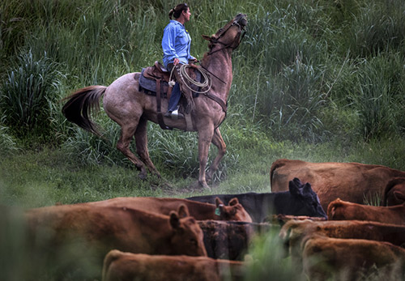

<aside class="sidebar previousCoverage">
  
  <h3 class="previously">Previous coverage </h3>
  <ul>
    <li><a href="http://www.seattletimes.com/seattle-news/environment/with-their-cattle-grazing-in-washingtons-wolf-country-ranchers-work-and-worry/">With cattle in Washington's wolf country, ranchers work and worry</a></li>

    <li><a href="http://www.seattletimes.com/seattle-news/environment/washington-state-to-kill-more-wolves-to-protect-livestock/">Washington state to kill more wolves to protect livestock</a></li>

    <li><a href="http://www.seattletimes.com/seattle-news/northwest/washington-state-wolf-population-growing/">Making a comeback: Washington's endangered wolf population in 'wave of recovery'</a></li>

    <li><a href="http://www.seattletimes.com/seattle-news/northwest/colville-tribes-to-open-hunt-on-wolves-near-canadian-border/">Colville tribes to open hunt on wolves near Canadian border</a></li>

  </ul>
</aside>